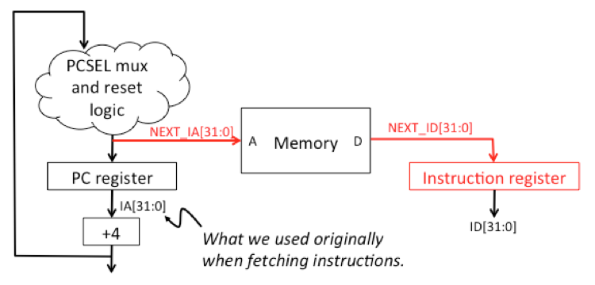
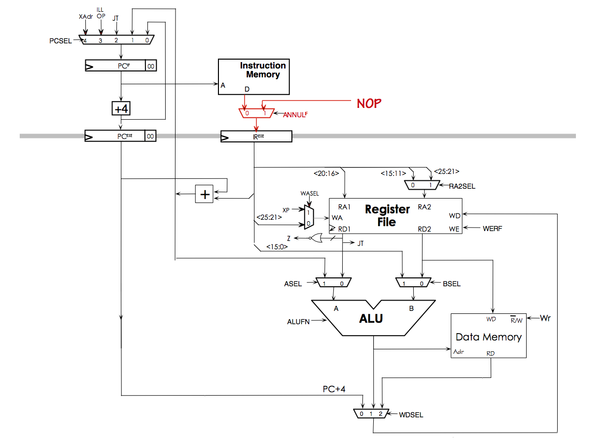

Your exercise answers are saved by the browser in local storage associated with this webpage. You can use the buttons below to load/save the answers on your system.
Save all answers:
Load all answers (this will overwrite any answers currently saved by the browser):
See the instructions below.
Use the Jade instance below to enter your design. Your design and Benmark will be saved each time you run a simulation.
{ "shared_modules": ["../exercises/alu/alu_modules", "../exercises/beta/beta_modules"], "hierarchical": "true", "required_tests": ["39a9da660735cc2ba0da375ccbc25128"], "parts": ["/gates/.*","/alu/.*","/beta/.*","/project/.*","memory","/user/.*"], "tools":
["check","timing"], "editors": ["schematic","icon","test"], "edit": "/project/test", "initial_state": { "/project/test":{"properties":{"name":{"edit":"yes","type":"name","value":"","label":"Name"}},"schematic":[["/beta/beta",[-128,40,0],{"name":"beta"}],["memory",[48,-24,0],{"name":"Main","nports":"3","naddr":"10","ndata":"32","contents":"//
Design project benchmark -- DO NOT MODIFY!\n+ 0x73ff0008 0x6ffe0000 0x73ffffff 0x00000000 0x00000000 0x00000000 0x00000000 0x00000000\n+ 0x0000071c 0xc01f0000 0x7fbf0008 0x739f0008 0x739f008e 0x739f00b1 0x739f0117 0x739f0129\n+ 0x739f0134
0x679f0718 0x73ffffff 0x0000071c 0xc3bd0004 0x679dfffc 0xc39f0528 0x04000000\n+ 0x67dc0004 0x08000000 0x67dc0008 0x0c000000 0x67dc000c 0x10000000 0x67dc0010 0x14000000\n+ 0x67dc0014 0x18000000 0x67dc0018 0x1c000000 0x67dc001c 0x20000000
0x67dc0020 0x24000000\n+ 0x67dc0024 0x28000000 0x67dc0028 0x2c000000 0x67dc002c 0x30000000 0x67dc0030 0x34000000\n+ 0x67dc0034 0x38000000 0x67dc0038 0x3c000000 0x67dc003c 0x40000000 0x67dc0040 0x44000000\n+ 0x67dc0044 0x48000000 0x67dc0048
0x4c000000 0x67dc004c 0x50000000 0x67dc0050 0x54000000\n+ 0x67dc0054 0x58000000 0x67dc0058 0x5c000000 0x67dc005c 0xc01fffff 0x62e00001 0x66fc0060\n+ 0x68000000 0x67dc0068 0xc23f0134 0x6ff10000 0x67df0628 0x663c006c 0x7dbf004b 0x73cd0000\n+
0x67dc0070 0x77cd0001 0x679f0628 0x67dc0074 0x78000000 0x67dc0078 0x65bc007c 0x83cdb800\n+ 0x67dc0080 0x87cdb800 0x67dc0084 0x904d6800 0x906db800 0x83c21800 0x67dc0090 0x944d6800\n+ 0x946db800 0x83c21800 0x67dc0094 0x984d6800 0x98776800
0x83c21800 0x67dc0098 0x9c000000\n+ 0x67dc009c 0xa3cdb800 0x67dc00a0 0xa7cdb800 0x67dc00a4 0xabcdb800 0x67dc00a8 0xafcdb800\n+ 0x67dc00ac 0xc05f0004 0xb3d71000 0x67dc00b0 0xb7d71000 0x67dc00b4 0xbbd71000 0x67dc00b8\n+ 0xbc000000 0x67dc00bc
0xc3c00001 0x67dc00c0 0xc7cdffff 0x67dc00c4 0xd3dc0528 0x67dc00d0\n+ 0xd7cd0000 0x67dc00d4 0xdbc0ffff 0x67dc00d8 0xdc000000 0x67dc00dc 0xe3cd7654 0x67dc00e0\n+ 0xe7cdffff 0x67dc00e4 0xebcdffff 0x67dc00e8 0xedadffff 0x65bc00ec 0xf3d70020
0x67dc00f0\n+ 0xf7cd0006 0x67dc00f4 0xfbcd0007 0x67dc00f8 0xfc000000 0x67dc00fc 0x639dfffc 0xc3bdfffc\n+ 0x6ffc0000 0xabadbabe 0xdeadbeef 0xc3bd0004 0x679dfffc 0xc01f7ff9 0xc03f0005 0x739f000a\n+ 0x643f062c 0x641f0630 0xc01f7de3 0xc03f0025
0x739f0005 0x643f0634 0x641f0638 0x639dfffc\n+ 0xc3bdfffc 0x6ffc0000 0xc05f0010 0xc07f0000 0xb0811000 0xc0bf0001 0xb0a51000 0xd4c00000\n+ 0x77e60003 0x84002000 0x80632800 0x73ff0002 0x80002000 0x84632800 0xc4420001 0xd4c20000\n+ 0x73e6fff3
0xd4c00000 0x73e60002 0x80010000 0xc4630001 0x8023f800 0x6ffc0000 0xc3bd0004\n+ 0x679dfffc 0xc01f0690 0xc3bd0004 0x641dfffc 0x739f000c 0xc7bd0004 0xc3bd0004 0x641dfffc\n+ 0xc01f0440 0xc3bd0004 0x641dfffc 0x739f001f 0xc7bd0008 0x641f063c
0x639dfffc 0xc3bdfffc\n+ 0x6ffc0000 0xc3bd0004 0x679dfffc 0xc3bd0004 0x677dfffc 0x837df800 0xc3bd0004 0x643dfffc\n+ 0xc3bd0004 0x645dfffc 0xc01f0000 0x603bfff4 0x73e10005 0x60410004 0x64010004 0x8001f800\n+ 0x8022f800 0x77e1fffb 0x605dfffc
0xc3bdfffc 0x603dfffc 0xc3bdfffc 0x637dfffc 0xc3bdfffc\n+ 0x639dfffc 0xc3bdfffc 0x6ffc0000 0xc3bd0004 0x679dfffc 0xc3bd0004 0x677dfffc 0x837df800\n+ 0xc3bd0004 0x643dfffc 0xc3bd0004 0x645dfffc 0xc3bd0004 0x647dfffc 0x601bfff4 0x603bfff0\n+
0x77e00001 0x73e1000a 0x73e10007 0x60400000 0x60610000 0x90421800 0x73e20003 0x60000004\n+ 0x60210004 0x73fffff6 0xc01f0000 0x73ff0001 0xc01f0001 0x607dfffc 0xc3bdfffc 0x605dfffc\n+ 0xc3bdfffc 0x603dfffc 0xc3bdfffc 0x637dfffc 0xc3bdfffc
0x639dfffc 0xc3bdfffc 0x6ffc0000\n+ 0x00000001 0x00000488 0x0000000a 0x00000490 0x00000003 0x00000478 0x00000009 0x00000448\n+ 0x00000005 0x00000470 0x00000007 0x00000480 0x00000006 0x00000468 0x00000004 0x00000460\n+ 0x00000008 0x00000458
0x00000002 0x00000450 0x0000000b 0x00000000 0xc3bd0004 0x679dfffc\n+ 0xc05f0002 0xc0ff0698 0x739f0000 0xc01f003c 0x80c7f800 0x603cfffc 0x64270000 0xc39c0004\n+ 0xc0e70004 0xc4000004 0x77e0fffa 0xc4420001 0x73e20001 0x6fe60000 0x639dfffc
0xc3bdfffc\n+ 0x6ffc0000 0xc01f0000 0xc03f0000 0xc05f0014 0xc0000001 0xc0210003 0x80000800 0x80200800\n+ 0xc4420001 0x77e2fffa 0x80010000 0x641f0710 0x6ffc0000 0xc01f1000 0x6780fffc 0x6000fffc\n+ 0x641f0714 0x6ffc0000 0x00000000 0x00000000
0x00000000 0x00000000 0x00000000 0x00000000\n+ 0x00000000 0x00000000 0x00000000 0x00000000 0x00000000 0x00000000 0x00000000 0x00000000\n+ 0x00000000 0x00000000 0x00000000 0x00000000 0x00000000 0x00000000 0x00000000 0x00000000\n+ 0x00000000
0x00000000 0x00000000 0x00000000 0x00000000 0x00000000 0x00000000 0x00000000\n+ 0x00000000 0x00000000 0x00000000 0x00000000 0x00000000 0x00000000 0x00000000 0x00000000\n+ 0x00000000 0x00000000 0x00000000 0x00000000 0x00000000 0x00000000
0x00000000 0x00000000\n+ 0x00000000 0x00000000 0x00000000 0x00000000 0x00000000 0x00000000 0x00000000 0x00000000\n+ 0x00000000 0x00000000 0x00000000 0x00000000 0x00000000 0x00000000 0x00000000 0x00000000\n+ 0x00000000 0x00000000 0xedededed
0xedededed 0xedededed 0xedededed 0xedededed 0xedededed\n+ 0x00000001 0x00000000 0x0000000a 0x00000658 0x00000003 0x00000688 0x00000009 0x00000680\n+ 0x00000005 0x00000678 0x00000007 0x00000670 0x00000006 0x00000660 0x00000004 0x00000650\n+
0x00000008 0x00000668 0x00000002 0x00000640 0x0000000b 0x00000648 0x00000000 0x00000000\n+ 0x00000000 0x00000000 0x00000000 0x00000000 0x00000000 0x00000000 0x00000000 0x00000000\n+ 0x00000000 0x00000000 0x00000000 0x00000000 0x00000000
0x00000000 0x00000000 0x00000000\n+ 0x00000000 0x00000000 0x00000000 0x00000000 0x00000000 0x00000000 0x00000000 0x00000000\n+ 0x00000000 0x00000000 0x00000000 0x00000000 0xedededed 0x0badbabe 0xedededed 0x00000000\n"}],["wire",[120,-24,0,8,0],{"signal":"id[31:0]"}],["wire",[120,16,0,8,0],{"signal":"mrd[31:0]"}],["wire",[120,56,0,8,0],{"signal":"mwd[31:0]"}],["wire",[48,-24,0,-8,0],{"signal":"ia[11:2]"}],["wire",[48,-16,0,-8,0],{"signal":"1'1"}],["wire",[48,-8,0,-8,0],{"signal":"0'1"}],["wire",[48,0,0,-8,0],{"signal":"0'1"}],["wire",[48,16,0,-8,0],{"signal":"ma[11:2]"}],["wire",[48,32,0,-8,0],{"signal":"0'1"}],["wire",[48,40,0,-8,0],{"signal":"0'1"}],["wire",[48,56,0,-8,0],{"signal":"ma[11:2]"}],["wire",[48,64,0,-8,0],{"signal":"0'1"}],["wire",[48,72,0,-8,0],{"signal":"mwr"}],["wire",[48,80,0,-8,0],{"signal":"clk"}],["wire",[-160,56,0,-8,0],{"signal":"clk"}],["wire",[-160,40,0,-8,0],{"signal":"reset"}],["wire",[-160,24,0,-8,0],{"signal":"0'1"}],["wire",[-160,8,0,-8,0],{"signal":"mrd[31:0]"}],["wire",[-160,-8,0,-8,0],{"signal":"id[31:0]"}],["wire",[-64,-8,0,8,0],{"signal":"ia[31:0]"}],["wire",[-64,8,0,8,0],{"signal":"ma[31:0]"}],["wire",[-64,24,0,8,0],{"signal":"moe"}],["wire",[-64,40,0,8,0],{"signal":"mwr"}],["wire",[-64,56,0,8,0],{"signal":"mwd[31:0]"}],["wire",[48,24,0,-8,0],{"signal":"moe"}],["text",[21,-81,0],{"text":"The
contents of main memory have"}],["text",[22,-70,0],{"text":"been initialized with the binary for the"}],["text",[22,-59,0],{"text":"Design Project test program."}]],"test":[["test",".power Vdd=1\n.thresholds Vol=0 Vil=0.1 Vih=0.9 Voh=1\n\n.group
inputs RESET\n.mode gate\n\n.cycle CLK=1 tran 1n assert inputs tran 49n CLK=0 tran 50n\n\n1\n.repeat 1140\n0\n\n// Verify correct completion of benchmark -- DO NOT MODIFY!\n.mverify Main 0x0 0x73ff0008 0x6ffe0000 0x73ffffff 0x00000000
// Beta addr 0x0\n.mverify Main 0x4 0x00000000 0x00000000 0x00000000 0x00000000 // Beta addr 0x10\n.mverify Main 0x8 0x0000071c 0xc01f0000 0x7fbf0008 0x739f0008 // Beta addr 0x20\n.mverify Main 0xc 0x739f008e 0x739f00b1 0x739f0117 0x739f0129
// Beta addr 0x30\n.mverify Main 0x10 0x739f0134 0x679f0718 0x73ffffff 0x0000071c // Beta addr 0x40\n.mverify Main 0x14 0xc3bd0004 0x679dfffc 0xc39f0528 0x04000000 // Beta addr 0x50\n.mverify Main 0x18 0x67dc0004 0x08000000 0x67dc0008
0x0c000000 // Beta addr 0x60\n.mverify Main 0x1c 0x67dc000c 0x10000000 0x67dc0010 0x14000000 // Beta addr 0x70\n.mverify Main 0x20 0x67dc0014 0x18000000 0x67dc0018 0x1c000000 // Beta addr 0x80\n.mverify Main 0x24 0x67dc001c 0x20000000
0x67dc0020 0x24000000 // Beta addr 0x90\n.mverify Main 0x28 0x67dc0024 0x28000000 0x67dc0028 0x2c000000 // Beta addr 0xa0\n.mverify Main 0x2c 0x67dc002c 0x30000000 0x67dc0030 0x34000000 // Beta addr 0xb0\n.mverify Main 0x30 0x67dc0034
0x38000000 0x67dc0038 0x3c000000 // Beta addr 0xc0\n.mverify Main 0x34 0x67dc003c 0x40000000 0x67dc0040 0x44000000 // Beta addr 0xd0\n.mverify Main 0x38 0x67dc0044 0x48000000 0x67dc0048 0x4c000000 // Beta addr 0xe0\n.mverify Main 0x3c
0x67dc004c 0x50000000 0x67dc0050 0x54000000 // Beta addr 0xf0\n.mverify Main 0x40 0x67dc0054 0x58000000 0x67dc0058 0x5c000000 // Beta addr 0x100\n.mverify Main 0x44 0x67dc005c 0xc01fffff 0x62e00001 0x66fc0060 // Beta addr 0x110\n.mverify
Main 0x48 0x68000000 0x67dc0068 0xc23f0134 0x6ff10000 // Beta addr 0x120\n.mverify Main 0x4c 0x67df0628 0x663c006c 0x7dbf004b 0x73cd0000 // Beta addr 0x130\n.mverify Main 0x50 0x67dc0070 0x77cd0001 0x679f0628 0x67dc0074 // Beta addr 0x140\n.mverify
Main 0x54 0x78000000 0x67dc0078 0x65bc007c 0x83cdb800 // Beta addr 0x150\n.mverify Main 0x58 0x67dc0080 0x87cdb800 0x67dc0084 0x904d6800 // Beta addr 0x160\n.mverify Main 0x5c 0x906db800 0x83c21800 0x67dc0090 0x944d6800 // Beta addr 0x170\n.mverify
Main 0x60 0x946db800 0x83c21800 0x67dc0094 0x984d6800 // Beta addr 0x180\n.mverify Main 0x64 0x98776800 0x83c21800 0x67dc0098 0x9c000000 // Beta addr 0x190\n.mverify Main 0x68 0x67dc009c 0xa3cdb800 0x67dc00a0 0xa7cdb800 // Beta addr 0x1a0\n.mverify
Main 0x6c 0x67dc00a4 0xabcdb800 0x67dc00a8 0xafcdb800 // Beta addr 0x1b0\n.mverify Main 0x70 0x67dc00ac 0xc05f0004 0xb3d71000 0x67dc00b0 // Beta addr 0x1c0\n.mverify Main 0x74 0xb7d71000 0x67dc00b4 0xbbd71000 0x67dc00b8 // Beta addr 0x1d0\n.mverify
Main 0x78 0xbc000000 0x67dc00bc 0xc3c00001 0x67dc00c0 // Beta addr 0x1e0\n.mverify Main 0x7c 0xc7cdffff 0x67dc00c4 0xd3dc0528 0x67dc00d0 // Beta addr 0x1f0\n.mverify Main 0x80 0xd7cd0000 0x67dc00d4 0xdbc0ffff 0x67dc00d8 // Beta addr 0x200\n.mverify
Main 0x84 0xdc000000 0x67dc00dc 0xe3cd7654 0x67dc00e0 // Beta addr 0x210\n.mverify Main 0x88 0xe7cdffff 0x67dc00e4 0xebcdffff 0x67dc00e8 // Beta addr 0x220\n.mverify Main 0x8c 0xedadffff 0x65bc00ec 0xf3d70020 0x67dc00f0 // Beta addr 0x230\n.mverify
Main 0x90 0xf7cd0006 0x67dc00f4 0xfbcd0007 0x67dc00f8 // Beta addr 0x240\n.mverify Main 0x94 0xfc000000 0x67dc00fc 0x639dfffc 0xc3bdfffc // Beta addr 0x250\n.mverify Main 0x98 0x6ffc0000 0xabadbabe 0xdeadbeef 0xc3bd0004 // Beta addr 0x260\n.mverify
Main 0x9c 0x679dfffc 0xc01f7ff9 0xc03f0005 0x739f000a // Beta addr 0x270\n.mverify Main 0xa0 0x643f062c 0x641f0630 0xc01f7de3 0xc03f0025 // Beta addr 0x280\n.mverify Main 0xa4 0x739f0005 0x643f0634 0x641f0638 0x639dfffc // Beta addr 0x290\n.mverify
Main 0xa8 0xc3bdfffc 0x6ffc0000 0xc05f0010 0xc07f0000 // Beta addr 0x2a0\n.mverify Main 0xac 0xb0811000 0xc0bf0001 0xb0a51000 0xd4c00000 // Beta addr 0x2b0\n.mverify Main 0xb0 0x77e60003 0x84002000 0x80632800 0x73ff0002 // Beta addr 0x2c0\n.mverify
Main 0xb4 0x80002000 0x84632800 0xc4420001 0xd4c20000 // Beta addr 0x2d0\n.mverify Main 0xb8 0x73e6fff3 0xd4c00000 0x73e60002 0x80010000 // Beta addr 0x2e0\n.mverify Main 0xbc 0xc4630001 0x8023f800 0x6ffc0000 0xc3bd0004 // Beta addr 0x2f0\n.mverify
Main 0xc0 0x679dfffc 0xc01f0690 0xc3bd0004 0x641dfffc // Beta addr 0x300\n.mverify Main 0xc4 0x739f000c 0xc7bd0004 0xc3bd0004 0x641dfffc // Beta addr 0x310\n.mverify Main 0xc8 0xc01f0440 0xc3bd0004 0x641dfffc 0x739f001f // Beta addr 0x320\n.mverify
Main 0xcc 0xc7bd0008 0x641f063c 0x639dfffc 0xc3bdfffc // Beta addr 0x330\n.mverify Main 0xd0 0x6ffc0000 0xc3bd0004 0x679dfffc 0xc3bd0004 // Beta addr 0x340\n.mverify Main 0xd4 0x677dfffc 0x837df800 0xc3bd0004 0x643dfffc // Beta addr 0x350\n.mverify
Main 0xd8 0xc3bd0004 0x645dfffc 0xc01f0000 0x603bfff4 // Beta addr 0x360\n.mverify Main 0xdc 0x73e10005 0x60410004 0x64010004 0x8001f800 // Beta addr 0x370\n.mverify Main 0xe0 0x8022f800 0x77e1fffb 0x605dfffc 0xc3bdfffc // Beta addr 0x380\n.mverify
Main 0xe4 0x603dfffc 0xc3bdfffc 0x637dfffc 0xc3bdfffc // Beta addr 0x390\n.mverify Main 0xe8 0x639dfffc 0xc3bdfffc 0x6ffc0000 0xc3bd0004 // Beta addr 0x3a0\n.mverify Main 0xec 0x679dfffc 0xc3bd0004 0x677dfffc 0x837df800 // Beta addr 0x3b0\n.mverify
Main 0xf0 0xc3bd0004 0x643dfffc 0xc3bd0004 0x645dfffc // Beta addr 0x3c0\n.mverify Main 0xf4 0xc3bd0004 0x647dfffc 0x601bfff4 0x603bfff0 // Beta addr 0x3d0\n.mverify Main 0xf8 0x77e00001 0x73e1000a 0x73e10007 0x60400000 // Beta addr 0x3e0\n.mverify
Main 0xfc 0x60610000 0x90421800 0x73e20003 0x60000004 // Beta addr 0x3f0\n.mverify Main 0x100 0x60210004 0x73fffff6 0xc01f0000 0x73ff0001 // Beta addr 0x400\n.mverify Main 0x104 0xc01f0001 0x607dfffc 0xc3bdfffc 0x605dfffc // Beta addr
0x410\n.mverify Main 0x108 0xc3bdfffc 0x603dfffc 0xc3bdfffc 0x637dfffc // Beta addr 0x420\n.mverify Main 0x10c 0xc3bdfffc 0x639dfffc 0xc3bdfffc 0x6ffc0000 // Beta addr 0x430\n.mverify Main 0x110 0x00000001 0x00000488 0x0000000a 0x00000490
// Beta addr 0x440\n.mverify Main 0x114 0x00000003 0x00000478 0x00000009 0x00000448 // Beta addr 0x450\n.mverify Main 0x118 0x00000005 0x00000470 0x00000007 0x00000480 // Beta addr 0x460\n.mverify Main 0x11c 0x00000006 0x00000468 0x00000004
0x00000460 // Beta addr 0x470\n.mverify Main 0x120 0x00000008 0x00000458 0x00000002 0x00000450 // Beta addr 0x480\n.mverify Main 0x124 0x0000000b 0x00000000 0xc3bd0004 0x679dfffc // Beta addr 0x490\n.mverify Main 0x128 0xc05f0002 0xc0ff0698
0x739f0000 0xc01f003c // Beta addr 0x4a0\n.mverify Main 0x12c 0x80c7f800 0x603cfffc 0x64270000 0xc39c0004 // Beta addr 0x4b0\n.mverify Main 0x130 0xc0e70004 0xc4000004 0x77e0fffa 0xc4420001 // Beta addr 0x4c0\n.mverify Main 0x134 0x73e20001
0x6fe60000 0x639dfffc 0xc3bdfffc // Beta addr 0x4d0\n.mverify Main 0x138 0x6ffc0000 0xc01f0000 0xc03f0000 0xc05f0014 // Beta addr 0x4e0\n.mverify Main 0x13c 0xc0000001 0xc0210003 0x80000800 0x80200800 // Beta addr 0x4f0\n.mverify Main
0x140 0xc4420001 0x77e2fffa 0x80010000 0x641f0710 // Beta addr 0x500\n.mverify Main 0x144 0x6ffc0000 0xc01f1000 0x6780fffc 0x6000fffc // Beta addr 0x510\n.mverify Main 0x148 0x641f0714 0x6ffc0000 0x00000000 0x80000060 // Beta addr 0x520\n.mverify
Main 0x14c 0x80000068 0x80000070 0x80000078 0x80000080 // Beta addr 0x530\n.mverify Main 0x150 0x80000088 0x80000090 0x80000098 0x800000a0 // Beta addr 0x540\n.mverify Main 0x154 0x800000a8 0x800000b0 0x800000b8 0x800000c0 // Beta addr
0x550\n.mverify Main 0x158 0x800000c8 0x800000d0 0x800000d8 0x800000e0 // Beta addr 0x560\n.mverify Main 0x15c 0x800000e8 0x800000f0 0x800000f8 0x80000100 // Beta addr 0x570\n.mverify Main 0x160 0x80000108 0x80000110 0x73ff0008 0x00000000
// Beta addr 0x580\n.mverify Main 0x164 0x80000124 0x00000134 0x00000140 0x00000148 // Beta addr 0x590\n.mverify Main 0x168 0x00000154 0xdeadbeef 0x52acbef7 0x6aaebee7 // Beta addr 0x5a0\n.mverify Main 0x16c 0x00000000 0x00000000 0x00000001
0x00000001 // Beta addr 0x5b0\n.mverify Main 0x170 0x00000001 0x000001a0 0x52ad0008 0xffffbeef // Beta addr 0x5c0\n.mverify Main 0x174 0xad52bee7 0x52ad4118 0x3ff00080 0x073ff000 // Beta addr 0x5d0\n.mverify Main 0x178 0x073ff000 0x000001e4
0x00000000 0xdeadbef0 // Beta addr 0x5e0\n.mverify Main 0x17c 0x00000000 0x00000000 0x00000001 0x00000001 // Beta addr 0x5f0\n.mverify Main 0x180 0x00000001 0x00000214 0x00003644 0xffffffff // Beta addr 0x600\n.mverify Main 0x184 0x21524110
0xdeadbeef 0x73ff0008 0x037ab6fb // Beta addr 0x610\n.mverify Main 0x188 0xffbd5b7d 0x00000254 0xedededed 0x00001998 // Beta addr 0x620\n.mverify Main 0x18c 0x00000001 0x00000367 0x00000000 0x00000001 // Beta addr 0x630\n.mverify Main
0x190 0x00000001 0x00000688 0x0000000a 0x00000690 // Beta addr 0x640\n.mverify Main 0x194 0x00000003 0x00000678 0x00000009 0x00000648 // Beta addr 0x650\n.mverify Main 0x198 0x00000005 0x00000670 0x00000007 0x00000680 // Beta addr 0x660\n.mverify
Main 0x19c 0x00000006 0x00000668 0x00000004 0x00000660 // Beta addr 0x670\n.mverify Main 0x1a0 0x00000008 0x00000658 0x00000002 0x00000650 // Beta addr 0x680\n.mverify Main 0x1a4 0x0000000b 0x00000000 0x739f0000 0xc01f003c // Beta addr
0x690\n.mverify Main 0x1a8 0x80c7f800 0x603cfffc 0x64270000 0xc39c0004 // Beta addr 0x6a0\n.mverify Main 0x1ac 0xc0e70004 0xc4000004 0x77e0fffa 0xc4420001 // Beta addr 0x6b0\n.mverify Main 0x1b0 0x73e20001 0x6fe60000 0x639dfffc 0xc3bdfffc
// Beta addr 0x6c0\n.mverify Main 0x1b4 0x6ffc0000 0x739f0000 0xc01f003c 0x80c7f800 // Beta addr 0x6d0\n.mverify Main 0x1b8 0x603cfffc 0x64270000 0xc39c0004 0xc0e70004 // Beta addr 0x6e0\n.mverify Main 0x1bc 0xc4000004 0x77e0fffa 0xc4420001
0x73e20001 // Beta addr 0x6f0\n.mverify Main 0x1c0 0x6fe60000 0x639dfffc 0xc3bdfffc 0x6ffc0000 // Beta addr 0x700\n.mverify Main 0x1c4 0x5d7bd920 0x00000044 0x00000044 // Beta addr 0x710\n\n.plotdef reg R0 R1 R2 R3 R4 R5 R6 R7 R8 R9 R10
R11 R12 R13 R14 R15 R16 R17 R18 R19 R20 R21 R22 R23 R24 R25 R26 R27 R28 R29 R30 R31\n\n.plotdef op ??? ??? ??? ??? ??? ??? ??? ??? ??? ??? ??? ??? ??? ??? ??? ??? ??? ??? ??? ??? ??? ??? ??? ??? LD ST ??? JMP BEQ BNE ??? LDR ADD SUB MUL
DIV CMPEQ CMPLT CMPLE ??? AND OR XOR XNOR SHL SHR SRA ??? ADDC SUBC MULC DIVC CMPEQC CMPLTC CMPLEC ??? ANDC ORC XORC XNORC SHLC SHRC SRAC ???\n\n.plot clk\n.plot reset\n.plot X(ia[31:0])\n.plot X(id[31:0])\n.plot op(id[31:26])\n.plot reg(id[20:16])\n.plot
reg(id[15:11])\n.plot reg(id[25:21])\n.plot X(ma[31:0])\n.plot moe\n.plot X(mrd[31:0])\n.plot mwr\n.plot X(mwd[31:0])\n\n"]]} }}
Instructions
Copy your Beta modules from the "Building the Beta" exercise into the design project workspace:
In another browser window open up the "Building the Beta" exercise and scroll down to the Jade window in Problem 3. In the module toolbar at the top of the Jade window, click on to copy your
/alu and /beta modules onto the module clipboard.
Returning to the Jade instance for the design project, in the module toolbar below, click on , which will pop up a window to let you select which modules to copy into the current workspace. Select all the /alu and /beta modules and click "OK", which will add the selected modules to your parts bin.
The top-level module in the Design Project is /project/test, which initially has an instance of your /beta/beta and a 3-port main memory containing the benchmark code. Your job is to optimize your Beta design as described below, possibly
modifying the top-level module, e.g., to reduce the number of ports in the Main memory.
Each time you make an improvement, use the tool to run the simulation and verify your Beta is still working correctly. In the plot window click to see your current Benmark (see below), which is used to compute your score. Running
the simulation will save your work on the server and register your current score. You can submit as often as you'd like and the server will keep track of your best design to date.
NOTE: the goal is to keep the original functionality as you do your optimizations -- your optimized Beta should be able to run any legitimate Beta program. Lobotomizing your Beta isn't kosher and the checkoff code tests that each instruction
is implemented and that illegal instructions do, in fact, generate ILLOP traps. So, for example, even though the IRQ input is tied to 0 in /project/test, you shouldn't delete the circuitry associated handling interrupt requests.
Hint: It's good to keep copies of your modules as you go along. Before modifying a module, use the tool in the module toolbar at the top of the Jade instance to make a copy of the currently
selected module. Use a simple naming scheme, e.g., /beta/beta_v1,
/beta/beta_v2, ..., to keep track of different versions of a module. You'll be glad to have these back-up copies!
Note that the tool will select the copy for editing, so if your copy is intended to be the archived version, you'll need to reselect the original module and edit that.
Project Description
For this project we're asking you to optimize the price/performance of your Beta design. The "price" is determined from the area of your circuit as reported by JSim at the end of each simulation run (it reports the size in square microns when
you click in the simulation pane). The "performance" is determined by the time needed to complete a set of benchmark programs. Benchmarking is the traditional, if somewhat unreliable, way of characterizing processor
performance.
The benchmark suite can be found in the second Appendix below; in addition to a short functional test, it includes four benchmarks:
Benchmark #1 makes two calls to a subroutine that performs an unsigned divide of its arguments, and then stores the quotients and remainders in main memory.
Benchmark #2 makes two subroutine calls: one to do an in-place reverse an 11-element list, the second to compare the reversed list with an "answer" list to see if all went well.
Benchmark #3 makes a copy of itself further up in memory and then jumps to the first location of the copy. The process is repeated 2 times.
Benchmark #4 just performs a lot of register arithmetic and writes the result to memory -- should be a slam dunk for pipelined and superscalar machines.
See the benchmark suite for details about what values are written by each benchmark. The checkoff tests require 1104 cycles to execute on a standard unpipelined Beta. The test initially uses a clock period of 100ns, giving your Beta plenty
of time to run each cycle. As you improve your design you'll shorten the clock period to reflect the propagation of your circuitry with the goal of running the benchmark as fast as possible, which will maximize your score.
Since your optimized design may operate differently than the Beta described in the Lab handouts, the test in the TEST tab is a little different than the others we've seen so far this semester. The test only supplies a RESET signal (high during
the first cycle, low afterwards) and sets the clock period. The test is set up to run 1104 cycles, after which the test checks certain locations of this memory to see that the benchmark has completed successfully. If your design passes verification,
you can submit it to the on-line checkoff system to record the number of points your design has received. The points are determined by the following formula:
Benmark = 1e-10/(< ending simulation time in seconds > * < size in meter2 > ) Points = round(Benmark)/2 [min = 0, max = 20]
The smaller your circuit and the shorter the time it takes to complete the simulation, the better the Benmark. A good Beta design completed as described in the Lab 5 handout has a Benmark of 15 or more (depending on various design choices)
and would receive a few points if submitted. Earning 10 points on the design project is very doable. Earning 15 points is within reach but will require close attention to all the details listed in the Hints section below. Earning all 20 points
will require insight and a considerable investment of time.
Your first step should be to load your current Beta design as described above, and then verify that your Beta design can complete the benchmark successfully. You may find that the benchmark code triggers some bug in your original Beta
design that was not detected by the Beta checkoff code -- you'll need to track down down and fix the problems before starting in on optimizations. [If you discover such a case, let us know so we can fix the Beta tests... thanks!]
Your second step should be to adjust the clock period down from the default value of 100ns. See #1 in the "Hints for speed" below. This will give you an accurate Benmark for your Lab 5 design.
Good luck! Don't be discouraged if your design doesn't earn a zillion points on the first try -- it takes some practice to get the knack of making circuits both fast and small. If you achieve a great Benmark, let us know and come join the
6.004 staff :)
Hints for size
The biggest single size reduction comes from eliminating one port on the multi-port main memory by combining the read and write data ports, multiplexing a single 32-bit bus between read and write data (we'll never need both in the same
cycle!). Use tristate drivers to send write data to the memory's data pins (the memory has these built-in for sending data back to the processor -- that's what the MOE signal has been controlling). The write-up for the Standard Cell library
has more documentation for the memory component.
Design an incrementer circuit for adding 4 to the PC instead of using a regular 2-input adder. This is easy to do -- just think about an adder where the second input is the constant 4 (i.e., all but one of the input bits is zero!) and
then eliminate/simplify the adder logic appropriately.
Design a shifter unit that uses a single circuit with seven 32-bit shifters to implement both left and right shifts. You can do this because, for example, a right shift can be implemented as a left shift by bit-reversing A[31:0] on the way in, and bit-reversing the answer on the way out. "Bit reverse" means simply flipping the 32-word end-for-end -- we want to shift A[0:31] instead of A[31:0].
Use logic gates instead of a ROM to generate some of the control signals, e.g., RA2SEL which is needed early in each cycle before the register file can be accessed. You can get some space saving by eliminating a CTL ROM
output, but it's not huge and your time is probably better spent on other optimizations. The main benefit of this optimization is a speed improvement for timing critical signals.
Hints for speedDetermine your minimum clock cycle. Here's a recipe:
Look at min observed setup time reported when you click the
after simulation completes. Say it says 72.123ns -- this is the amount of time by which you can shorted your clock cycle. We don't recommend trying to shave it too close -- in this case one could shave maybe
72ns from the clock cycle, reducing the clock period to 28ns. Note that this number is related to the actual code and data of the benchmark code and the cycle time you can get away with will be smaller than reported by timing analysis,
which is computing the worst-case tPD. In real life, your boss will make you use the worst-case number!
Adjust the timing of the clock period as specified in the TEST tab. The original clock period of 100ns is set by this line in the TEST tab:
.cycle CLK=1 tran 1n assert inputs tran 49ns CLK=0 tran 50n
where CLK=1 for 50ns and CLK=0 for 50ns of each test cycle. The
assert inputs command sets time in each cycle when the RESET input will change to its value for the cycle. In this case, that happens 1ns after the rising clock edge.
To shorten the clock period to 28ns, simply adjust the timing for each phase of the clock, keeping the 50% duty cycle:
.cycle CLK=1 tran 1n assert inputs tran 13ns CLK=0 tran 14n
Assuming that you haven't made any modifications that change the number of cycles the benchmark takes to run, you can simply leave the .repeat 1104 as is. If you change the number of cycles (
e.g., by adding branch delay slots with a 2-stage pipeline) then you'll need to look at the plotted waveforms to determine at which cycle you reach the end of the benchmark.
minimize load-dependent delays. As you connect the output of a gate to additional inputs, its capacitance increases and so changes in the signal value take longer (see the tR and tF columns in the standard cell documentation). Heavily
loaded signals should be buffered to reduce the total delay. There is a high-drive buffer (the icon with the "H") available for driving large loads. Use the timing analyzer (click on the icon with a gate and a little clock) and look for
signals in the critical path where the delay is greater than 1ns -- those signals are slow because they are driving many signals, so adding buffers can help speed things up.
It pays to be clever about buffering. For example id[15] is heavily loaded since it's used many times during sign-extension for the BSEL mux and for the offset adder in the PC module. But it's also an address input to
the register file, which we want to be fast since the register-file access is on the critical timing path. So it's best to leave the register-file input connected to id[15] while also creating a buffered version buf_id[15] and then using buf_id[15] for the BSEL mux and the PC logic. The heavy loads are now driven separately from the register-file input, i.e., there's a fast version of the signal and a slow version.
use inverting logic. NAND, NOR, etc. gates are noticeably faster than their non-inverting counterparts (AND, OR, ...). Rearranging logic to use inverting gates can make a big difference performance along the critical path of your
circuit. Positive logic gates are included in the standard cell library because they are often smaller than their inverting logic equivalents and thus may be useful for implementing logic that is not on the critical path.
minimize delay along critical paths. Look at the device and cycle for which the minimum observed setup was reported when you clicked
. By tracing back through the circuitry that lead to this critical path you should get some good ideas about where your circuit could use a speed boost. It's often possible to rearrange your logic to reduce the number
of gate delays along the critical path, sometimes at the cost of additional gates elsewhere but that's a tradeoff which is often worthwhile.
use a faster adder architecture for the ALU and branch-offset adder. Consider using an architecture that avoids rippling the carry through all 32 bits of the adder: carry-select and carry-lookahead are two techniques that are described
in more detail in the Appendix below.
reorganize instruction fetch. In a single cycle, an unpipelined Beta can make up to two accesses to the relatively slow main memory (4ns access time for the SRAM-sized memory we've been using). Worse yet, the two accesses are in
series: first we access the memory to fetch the current instruction, then a second access is needed for the data if the Beta is executing a LD, LDR or ST.
With a little reorganization, we can get the two accesses to happen in parallel! The trick is to fetch the next instruction at the end of the current cycle (overlapping with the data access, if any). The time for fetching the instruction
is no longer needed at the beginning of the cycle, allowing you to cut almost 4ns from your cycle time. Here's a diagram showing the necessary modifications:

Hint: you'll need to add a new terminal to your PC module. To do this, select the ICON tab for the PC module, click on the terminal tool (
), then click on the diagram to add a new terminal. Edit the terminal's NAME property, giving it the name of the internal signal you want accessible to user's of the PC module. If you want it to match the other terminals, use
the text tool () to add a text label that will be visible to designers when they're looking at the PC module's icon in their schematics.
A two-stage pipeline (instruction fetch and everything else) can come close to cutting the cycle time in half. A pipelined design is fun but a lot of work, so try the other hints first.
If you're working on a two-stage pipeline, start by implementing the simple 2-stage pipeline shown below:

The annul_if signal should be 1 when reset=1 or when pcsel[2:0]!=0, which happens when we're changing the PC from sequential execution. Get this working first -- it won't be faster, but it sets the stage for
a speed improvement in the next step.
In the second step, we want to have LD/LDR/ST take two cycles in the EXE stage: we'll compute the address in the first cycle and do the memory access in the second cycle. Let's call these two cycles MEM1 and MEM2. You'll need to convert
the PC_IF, PC_EXE and IR_EXE registers to load-enabled registers (see Slide 6 of L14); the load enable should be hooked to not_stall. And you'll need to add a register that holds the memory address between the output of the ALU
and main memory.
During MEM1, we need to generate a stall signal which, inverted to create not_stall, will stall the IF and EXE stages, ensuring that LD/LDR/ST will get two exe cycles. You should add some logic to ensure WR = 0 during
MEM1, even when the current instruction is ST (we'll do the actual write during MEM2). The memory address from the ALU is loaded into the new memory address register at the end of MEM1. Make sure stall is 0 during reset.
During MEM2, the memory will use the address calculated during MEM1 to perform the requested memory operation. stall should be 0 during MEM2, so that normal execution will resume in the next cycle.
Now that the ALU and main memory operations are in different clock cycles, your clock cycle time should be noticeably smaller.
Here's a
two-stage
pipelined Beta that uses a slightly different scheme than the one described above and has many additional optimizations, earning a Benmark of 54. This version takes a lot of effort to debug, so be aware that implementing this design will take some time.
Appendix: Faster adders
Our simple ripple-carry adder is quite slow and we can cut many nanoseconds off the cycle time by using an adder architecture that doesn't require the carry to travel through 32 stages of logic. Some good alternatives:
Carry-select adder (see
article on Wikipedia). Basic idea: do two additions for the high half of the bits, one assuming the carry-in is 0, the other assuming the carry-in is 1. Use a MUX to select the appropriate answers when the correct carry-in from the low half is known. The
Design
Tradeoffs lecture has some additional design hints for carry-select adders.
Carry-lookahead adder (see the
Design
Tradeoffs lecture). Basic idea: we can compute the carry-in for each bit using a tree of lookahead modules, resulting in a tPD that grows logarithmically with the size of the inputs instead of linearly.
Appendix: Test program
The BSim instance below shows the Beta program used to test the functionality of your improved Beta. You may find it useful to compare the cycle-by-cycle operation of your circuit with the cycle-by-cycle execution of the test program in the
BSim simulator. Note that any changes you make below (e.g., adding breakpoints) will not be saved when leaving this window.